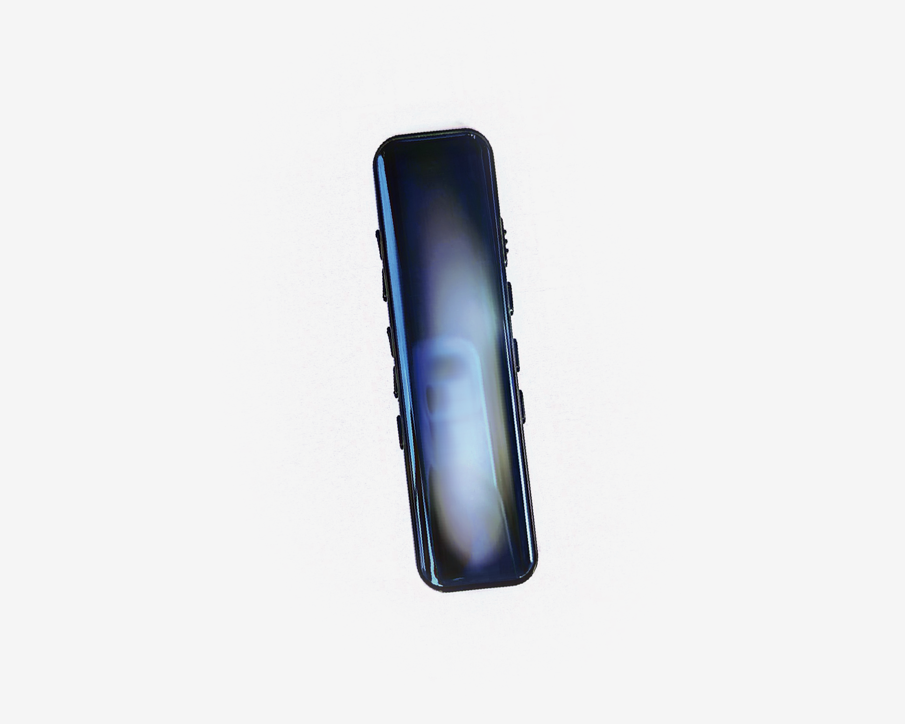

우리는 공간 속에서 존재하며, 시간에 의해 움직인다. 시간과 공간이 없다면 만물이 존재할 수 있을까? 20세기 초에 아인슈타인이 상대성 이론에서 상대운동이 시간과 공간에 미치는 영향을 설명한 것과 관련하여, 시간의 흐름은 "공간 안의 사건과 물체의 상대적인 운동 상태"에 의존한다는 것을 설명했다. 이것은 고정된·보편적으로 적용되는 척도가 아니라는 것을 의미하며, 즉 시간이 절대적인 것이 아니다. 공간 안에서는 통일된 시간 개념이 존재하지 않을 수 있다.
“The distinction between the past, present and future is only a stubbornly persistent illusion.” 아인슈타인이 돌아간 친구의 가족에게 쓴 편지의 내용 "시간은 단지 강력하고 지속되는 환상에 불과하다". '강력한 환상'은 주관적인 경험임을 강조하는 말이다. 시간은 우리의 생각이 만들어낸 개념을 의미한다.
시간의 본질에 대한 주관적 이해가 행동에서 구체적으로 나타나는 것을 의미한다. 시간의 전후 관계와 지속 시간의 길고 짧음, 빠르고 느림 따위에 대한 직관적 인식이다.
‘시간 지각'은 시간의 흐름을 감지하는 방식을 뜻한다. 이론에 따르면 사람들은 시간에 대한 내재적 시간 기준을 가지며, 마치 리듬 생성기가있듯이 일정한 기복이 생성하다고 한다. 이것은 추상적인 개념으로, 자체적인 도구로 볼 수 있다. 사람마다 자기만의 기준을 가지고 있으며 서로의 기준을 통해 얻은 결과도 다를 것이기 때문에 시간은 공동으로 소유되는 동시에 사적인 것이다. 서로의 기준을 통해 얻은 결과는 다를 것이며 나의 시간 지각은 어떻게 보게 될까요?
시간의 본질에 대한 주관적 이해를 강조하고, 나의 24시간을 기록하고 탐구할 것이다.

Instagram @chang1t